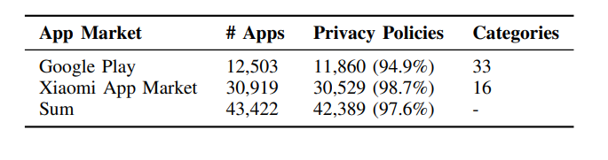
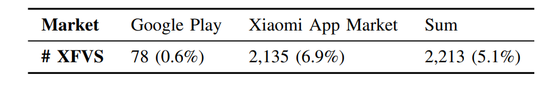
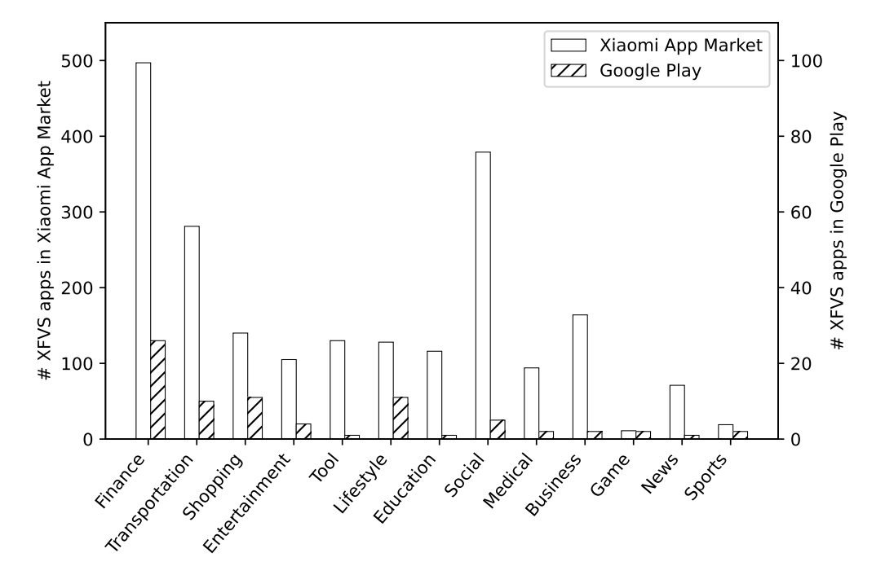
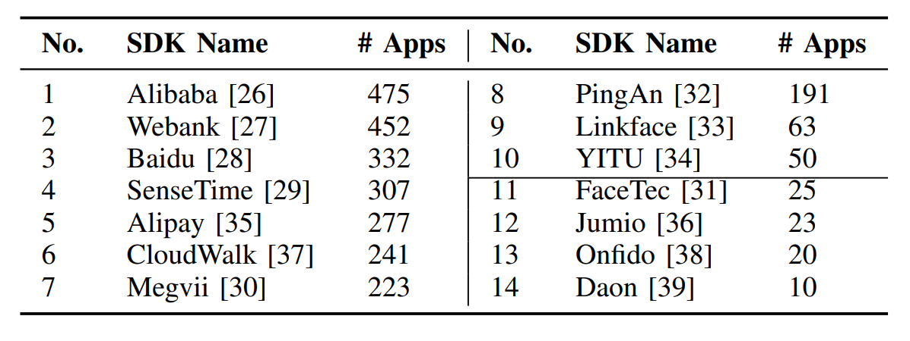
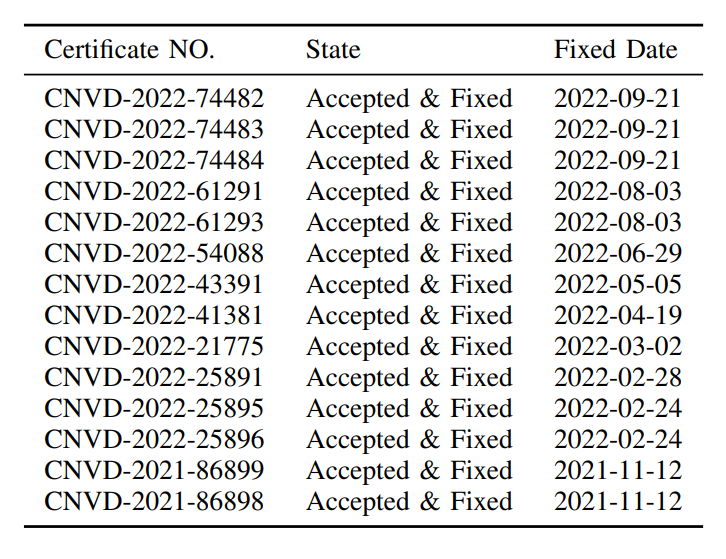

XFVS Security
Understand the (in)security of cross-side face verification systems in mobile apps from a system perspective.
About
While cross-side face verification systems (XFVS) are widely used in mobile apps, their security properties are not well understood. We conduct the first measurement study on the security of real-world XFVSes used by popular mobile apps from a system perspective. Our paper, Understanding the (In)Security of Cross-side Face Verification Systems in Mobile Apps: A System Perspective is published in IEEE S&P 2023. Here's the trailer of our talk:
Features
- We perform the first comprehensive measurement analysis on the security of cross-side face verification systems (XFVSes) from a system perspective, i.e., understanding the security of the cross-sided two-phase verification procedure.
- We design a principled method and implement a semi-automated framework named XFVSCHECKER to detect XFVS apps and analyze the security of XFVSes by inspecting how four security properties are satisfied with clear assessment rules.
- Our evaluation result reveals that real-world XFVSes, including those adopted by WeChat and AliPay, are under significant security threats. We summarize four typical attacks and illustrate them with case studies. We responsibly report the security issues and provide mitigation suggestions to related vendors.
Background
Cross-side face verification systems (XFVS) are widely used in mobile apps to verify an individual's claimed identity. Prior works have studied the attacks against XFVSes (and other FVSes) from the perspective of adversarial machine learning (ML), including presentation attacks and adversary attacks.

However, despite the previous success in studying the ML-driven attacks against XFVSes and the escalating arms race between defenses and attacks, one largely ignored perspective of XFVS security is the system design. In other words, it remains unclear whether the verification protocol adopted by XFVSes is secure due to the involvement of complex cross-side two-phase face verification.
FVS classification
To verify a person's identity, A face verification system (FVS) first collects his/her face data (face collection), and then verifies whether the collected face data is matched with the reference face data (face matching). In real-world applications, the two steps of face collection and face matching may occur in different places. Based on the split between face collection and face matching, we classify FVSes into three types: local FVS, remote FVS, and cross-side FVS.

-
Type I: Local FVS. A local FVS is designed to collect and match faces within the user’s device. The face data are saved locally and never leave the device.
-
Type II: Remote FVS. A remote FVS is designed to collect and match faces at a location away from the user, such as those used at border gates.
-
Type III: Cross-side FVS. A cross-side FVS (XFVS) collects faces on user-side devices, sends the face data to a trusted server, and performs face matching on the server side. Unlike local and remote FVSes which have to be done on specific devices, currently XFVSes usually allow users to use them from different devices, thus users can remotely verify their identities at any time and any place.
Threat Model

Our threat model of XFVS security involves two parties: (i) an untrusted client, and (ii) a trusted server.
First, an XFVS client is untrusted because attackers can use XFVSes on a device under their control, such as a custom ROM, a rooted OS or even a phone with special hardware. More specifically, inscope attacks involve but are not limited to code injection and data tampering, which modify client-side XFVS code and data.
Second, an XFVS server is trusted because attackers do not have any control over the server-side code. At the same time, an XFVS server may be vulnerable: For example, a vulnerable server may forget to validate the untrusted data coming from the client.
Our Method
To perform a comprehensive measurement analysis on the security of cross-side face verification systems (XFVSes), we design and implement a semi-automated testing framework, called XFVSCHECKER. It mainly solves two main challenges:
- How to detect XFVS applications with high accuracy?
- How to check the security properties of XFVS applications?
The key idea of detecting XFVS apps is that the semantics of “face” and “verification” should be closely present in the apps, with clear boundaries from the rest of the code. Therefore, we use a lightweight static analysis method to locate such semantics from app code and privacy policies, As shown in the figure below.
 XFVS Security Analysis
XFVS Security Analysis
By considering confidentiality and integrity in and across each step of XFVS's workflow, so that together they can guarantee the security of XFVS, we propose four key security properties:
-
SP1: Reliable Environment. Reliable Environment property is to ensure that the code, data and machine learning models at XFVS client are not tampered with by local attackers.
-
SP2: Camera Security. Camera Security property is to ensure that the face data to verify should come directly from the physical camera lens, instead of an injected data stream.
-
SP3: Reliable Liveness. Reliable Liveness property is to accurately determine whether the collected face data are being presented by a live person, as opposed to a fake or synthetic face.
-
SP4: Data Consistency. Data Consistency property is to ensure that XFVS data—including the collected face, the liveness configurations, and the validation results—are consistent between all steps across the client and the server.

For more detailed explaination, please refer to our paper or join our talk at IEEE S&P 2023.
Dataset
We collect 43,422 apps from Google Play and Xiaomi App Market during May 2021, as shown in table below. Specifically, we download top free and trending apps across all 33 categories from Google Play, and top apps from all 16 categories of the Xiaomi App Market. Note that all game-related apps are categorized as one “Game” category. We also download the privacy policies of these apps from their app introduction pages in the market. 
Prevalence
XFVSCHECKER finds 2,213 XFVS apps out of 43,422 real-world apps (5.1%) in two markets, indicating that XFVS apps are popular now. Note that XFVS apps are often top apps with large numbers of users, for example, these 2,213 XFVS apps have an average of 38M downloads. Another interesting finding is that Xiaomi App Market has more XFVS apps than Google Play (6.9% VS. 0.6%), indicating that XFVSes are more used in China.
Distribution
We study the distribution of XFVS apps across different categories, and the results are shown in figure above. Note that we merge similar categories across app markets and within each market for the convenience of presentation, and we get 13 categories with XFVS apps. We can see that finance, social, and transportation are the top categories, and apps in these categories often contain very sensitive data and operations.
Overall Result
We cluster the XFVS code according to the prefixes of their package names and then identify XFVS SDKs. The above form lists the top 10 SDKs in the Xiaomi App Market and the top 4 SDKs in Google Play, as well as the number of apps that have integrated these SDKs for face verification. These SDKs are from well-known software developers, and they are widely used by a large number of users.
We apply our testing framework to evaluate the security of top SDKs. We analyzed over 80 apps in total with at least three apps per SDK, and all the analyzed apps are vulnerable to at least one attack.
Vulnerability Report
We receive 14 CNVD IDs, as listed in table above. Note these CNVDs are confidential for 10 years.
Mitigation
Based on our security analysis and the lessons learned, possible mitigation to the above XFVS attacks is discussed below.
-
Satisfying all security properties.The fundamental solution is to ensure that all security properties (SP1 to SP4) are well satisfied. For example, processes of XFVSes and the cameras should be placed in a trusted environment.
-
Using PKI with Local FVSes. A potential alternative to XFVSes is using PKI-based Local FVS, such as the FIDO2 protocol.
-
Enhancing XFVSes. Although it is hard to fully satisfy all security properties, some methods can be adopted to enhance current XFVSes. The XFVS apps can use more robust environment-checking tools, increase the randomness of liveness detection patterns, and add more checks to ensure data consistency.
-
Protecting XFVSes. Another idea is to protect XFVSes by filtering out abnormal requests. To do so, the app server can use device fingerprinting methods to only allow users to use XFVS on a few trusted devices, and also it can check the IP address of the request and the behavior history of the users.
Publications
Xiaohan Zhang, Haoqi Ye, Ziqi Huang, Xiao Ye, Yinzhi Cao, Yuan Zhang, Min Yang.
"Understanding the (In)Security of Cross-side Face Verification Systems in Mobile Apps: A System Perspective" 44th IEEE Symposium on Security and Privacy (IEEE S&P 2023).